Contents
YiQian Jin, Denis Tan, Jing Ye
Global energy demand is rising fast (USEIA, 2013), with cities absorbing most of the predicted demand expansion (The New Climate Economy, 2014). More specifically, much of the growth in energy demand will come from the growth of the middle class in emerging cities and economies. Each of these new middle-class individuals will make decentralized energy consumption decisions on a daily basis, with significant consequences for the aggregate consumption. Provision of information on energy demand may alter energy consumption decisions. Hence, there is tremendous value in understanding, projecting, and presenting information on short-term energy demand forecasts.
Energy demand is a function of many variables, including demographics, climate, and development stage. Much work has been done on energy demand forecasting over time, resulting in more and more realistic but complex models. There is an inherent trade-off between sophistication and complexity. Complex models are different to grasp and cognitively out of reach of the layperson.
In this paper, bearing in mind the need to present information to a general audience of middle-class decision makers, we avoid the pitfalls of complex models but instead attempt to project and present energy demand forecasts in a digestible form.
Cluster analysis, or clustering involves grouping objects in such a way that objects in the same group are more similar, by some pre-determined measure, to each other than to those in other groups. It is a main task of exploratory data mining, and a frequently used method for statistical data analysis, used in many fields, including machine learning and pattern recognition (Kaufman & Rousseeuw, 2009).
One particular method of implementing cluster analysis is K-means clustering (Witten & Hastie, 2014). It is a simple approach to group data into K distinct, non-overlapping clusters.
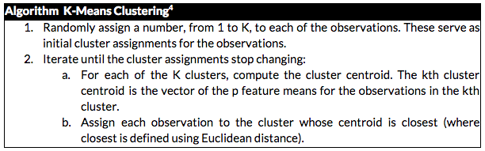
To implement cluster analysis, we implemented three steps: pre-processing, grouping, and analysis.
First, we trimmed the raw dataset from an unbalanced panel of energy demand data of 43 cities to a dataset with just a single year of energy demand (2013). We selected 2013 as it maximizes the number of cities (30) that can be retained in the dataset. The energy demand data, in MW, was also aggregated from the half-hourly level to the daily level to reduce the size of the dataset for quick computations. Data at the half-hourly level is unnecessarily granular for cluster analysis that spans a full calendar year. We then normalized energy demand data by subtracting the mean and using the standard deviation as a divisor. This normalization ensures that data from all cities are have zero for mean and one for standard deviation. The trimmed dataset is depicted below in Figures 1 and 2.
Figure 1: Plot of 2013 normalized energy demand data from 30 cities
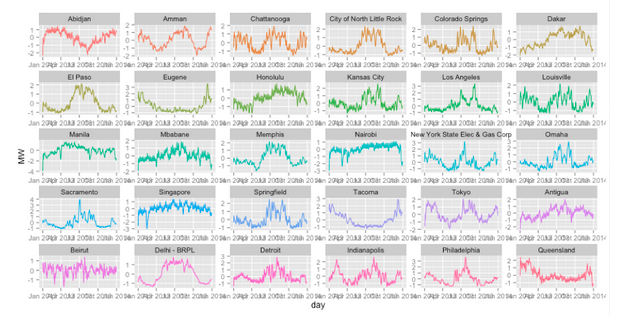
Figure 2: Data structure of first 15 of the 30 cities in trimmed data set
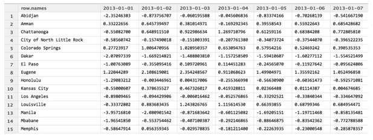
Second, we then proceed to group the data from 30 cities into four groups (clusters) using the K-means algorithm. Finally, we analysed the four groups (clusters). We did this by considering the geographic location and local weather patterns of the various cities.
We implemented all steps in the cluster analysis using the default kmeans() function in the {stat} package of the open-sourced statistical software, R (version 3.0.2).
There are various limitations to our approach. First, we are aware that groups obtained using the k-means method represent the local optimum rather than the global optimum. To reduce the impact of this limitation,, we chose to increase the number of iterations during computation computation to obtain stable clustering results. Specifically, we set the iteration count to be 20 and simulated 10 different starting points. In this approach, as in most clustering analyses, the number of clusters is pre-specified, so prior knowledge of the number of groups is required.
After clustering the energy data into four groups, we turn to forecasting. For forecasting, we revert to the original full dataset before trimming to retain the 30 cities used in the clustering analysis. Hence, the dataset now has energy data for multiple years. We also aggregated the half-hourly data to the daily level.
Energy demand of most cities show time series pattern. In general, time series data generally comprises of three components: trend, seasonal and random. Seasonality is defined as the tendency of time-series data to exhibit behavior that repeats itself in regular intervals. The term season is used to represent the period of time before behavior begins to repeat itself. If the seasonal component is present, it can be additive (where the size of the seasonal component is constant) or multiplicative (where the size of the seasonal component is proportionate to the level of the trend). Most energy demand data show seasonal pattern. The random component is the residual after trend and seasonality have been removed. Using R, we applied decompose() function to a sample city from each of the four clusters and plotted the outcome in Figures 3 to 6.
Figure 3: Decomposition of Eugene daily energy demand
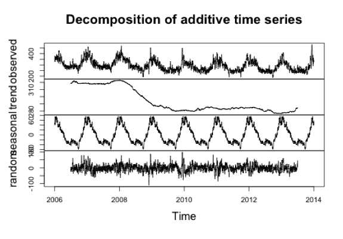
Figure 4: Decomposition of Dakar daily energy demand
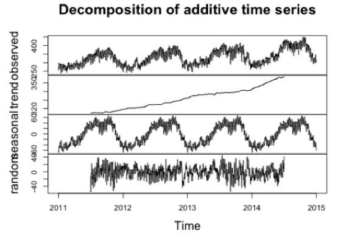
Figure 5: Decomposition of Louisville daily energy demand
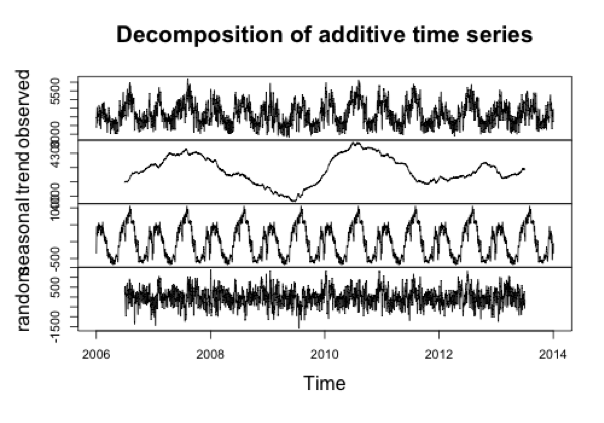
Figure 6: Decomposition of Sacramento daily energy demand
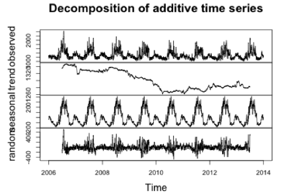
Holt-Winters is a forecasting method for dealing with time series data with both trend and seasonal components (Chatfield & Yar, 1998). It is an extension of the Single Exponential Smoothing method (Johnson & Montgomery, 1974). The Holt-Winters method has two versions, additive and multiplicative, the use of which depends on the characteristics of the particular time series. For simplicity, we use the additive method. Holt-Winters predictions are obtained as a weighted average of past observed values where the weights decline exponentially so that the values of recent observations contribute to the forecast more than the values of earlier observations. The additive formula of this model is as follow:
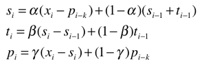
where k is the time period. The prediction formula is as follows:
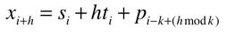
We visualized the data from the above cluster analysis and forecasting steps through a three step procedure using d3 (Bostock, 2013). First, we present a world map centered in the Pacific to depict the cities we considered for this project. Second, zoom in to the 4 groups of cities and present their average daily energy demand over a period of 365 days. Each group of cities are visualized in a Singapore chart. Third, we further zoom in to the city level and visualize the energy forecast for a typical city in each of the 4 groups.
This cascade of visualizations emphasizes the “drill-down” technique espoused by Schneiderman (1996) in his seminal paper on the visual information seeking mantra. This way, the first visualization provides an overarching overview before the second and third visualization take reader into greater and greater detail. At the same time, we have kept the visualizations minimalist to maximize data-ink and minimize chart-junk (Tufte, 1983).
Table 1 and Figure 7 shows the result of clustering. The map shows the geographical location of these 30 cities.
Table 1: Results of k-means clustering
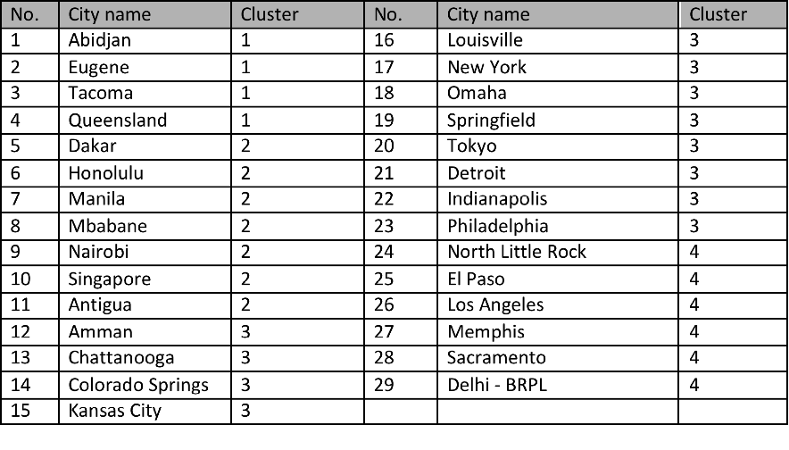
Figure 7: Visualization of the 4 clusters of cities
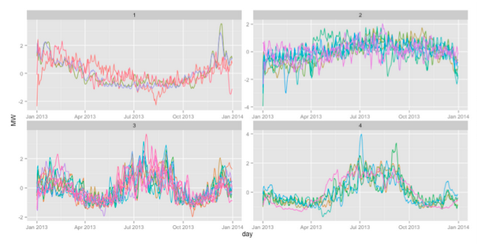
Note: From the figure, it is clear that the cities have been appropriately clustered according to the shape of their daily energy demand over the period of a single calendar year. Cluster 1 cities appear to have energy demand peak in January and trough in August. Cluster 2 cities appear to have a relatively flat energy demand profile throughout the year. Cluster 3 cities appear to have 2 peaks in energy demand per year in both January and August. Finally, cluster 4 cities appear have the opposite trend from cluster 1 cities, peaking in August but troughing in January.
Figure 8: Geographic location of 30 cities
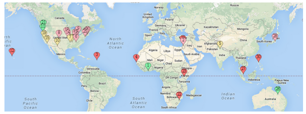
Note: Cluster1 cities are in green; Cluster 2 cities are in red; Cluster 3 cities are in purple; and Cluster 4 cities are yellow
Figure 9 depicts the energy demand profile for cluster 1 cities while Table 2 lists the four cluster 1 cities.
Figure 9: Cluster 1 energy demand plot
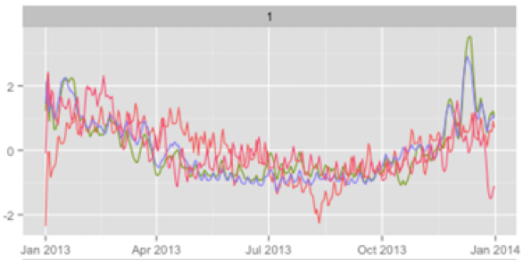
Table 2: Cluster 1 cities
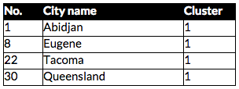
In this cluster, yearly energy pattern turns out to be “U” style, with the peak in January (boreal winter, austral summer) and the smoothly valley in August (boreal summer, austral winter). Intuitively, this pattern should correspond with cities of one of two specifications:
Eugene and Tacoma are both located in northwestern USA. Their proximity to the Pacific Coast mean that they are affected by warm currents, causing their seasons to be marked by warm, dry summers and wet, cool-to-chilly winters. Over the course of a year, their temperature typically varies from 38°F to 76°F and is rarely below 31°F or above 85°F. Hence, Tacoma and Eugene fall into the first of the two aforementioned types of cities.
Queensland is located in Australia in the southern hemisphere. The strong summers and mild winter mean that it corresponds to the second type of cities.
Abidjan, however, seems to be an outlier. Abidjan is a tropical city which should not have a ‘U’ shaped energy demand profile. This could potentially have been caused by the similarity of ‘U’ shaped profiles and flat profiles, constituting a limitation to the k-means method of clustering cities.
Figure 10 depicts the energy demand profile for cluster 2 cities while Table 3 lists the eight cluster 2 cities.
Figure 10: Cluster 2 energy demand plot
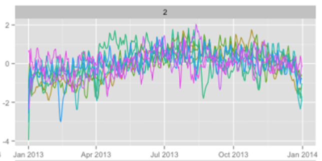
Table 3: Cluster 2 cities
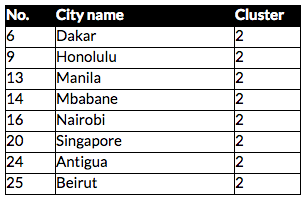
In this cluster, the energy demand profile appears to be flat. In other words, the intra-year fluctuations in energy demand is much less pronounced. Intuitively, this patterns should correspond with cities with one of two specifications:
Looking into the data, Singapore and Nairobi are equatorial cities consistently in need of cooling year round while the other 6 cities all located near the tropical zone and have little need for heating or cooling.
Figure 11 depicts the energy demand profile for cluster 3 cities while Table 4 lists the 12 cluster 3 cities.
Figure 11: Cluster 3 energy demand plot
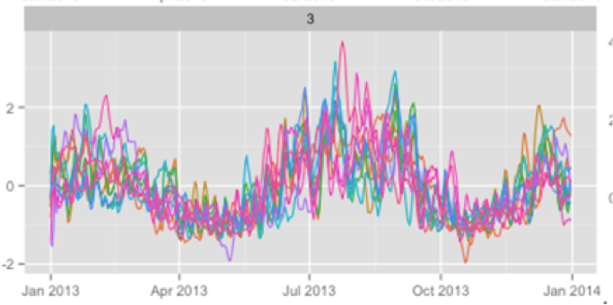
Table 4: Cluster 3 cities
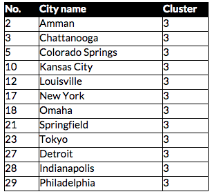
In this cluster, the energy demand profile appears to have 2 peaks, one during summer and one during winter. Intuitively, this pattern should correspond with cities need heating during winter and cooling during summer.
All cities in this cluster are located between the 30 and 60 degree latitude lines. This supports the hypothesis that both heating and cooling is needed at different times of the year.
Figure 12 depicts the energy demand profile for cluster 4 cities while Table 5 lists the eight cluster 4 cities.
Figure 12: Cluster 4 energy demand plot
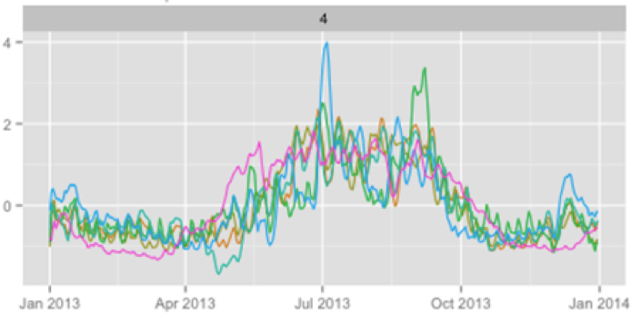
Table 5: Cluster 4 cities
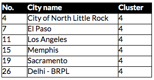
In this cluster, yearly energy pattern turns out to be “N” style, with the much less pronounced peak in January (boreal winter, austral summer) and a peak in August (boreal summer, austral winter). Intuitively, this pattern should correspond with cities of one of two specifications:
Geographically, North Little Rock, El Paso, Memphis, Sacramento and Los Angeles are all in the southern and western region of USA, which has the very favorable climate Mediterranean climate and subtropical climate with no severe cold winter there. The last one city Delhi, although located separated from other cities in this group, occupy a similar latitude and hence, has a similar climate. These cities all correspond to the second type.
We picked Abidjan, Dakar, Springfield, and Sacramento to represent Cluster 1, 2, 3, and 4 respectively. Through application of the Holt-Winters forecasting algorithm, we obtained a model for each of the four cities. We then analyzed the model fit using the Box-Ljung residual test. The results are summarized in Table 6.
Table 6: Summary of Box-Ljung test results
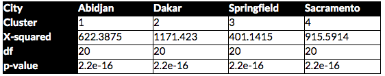
We present the forecasting results of each of the four cities separately, below. The first cluster’s representative, Abidjan, has a relatively flat, non-cyclical energy demand profile throughout the year with a distinct upward trend (see Figure 15).
Figure 13: Holt-Winters forecast for Eugene (Cluster1)
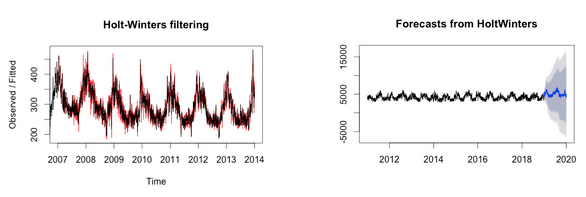
Note: Left chart depicts comparison between model (red) and original data (black). Right chart depicts the 365-day forecast of daily energy demand of Abidjan. Original data spanned 4 calendar years from 2010 to end of 2013.
The second cluster’s representative, Dakar, has both a general upward trend and a seasonal (cyclical) pattern that reaches its highest point in the middle of the year before declining towards end of the year.
Figure 14: Holt-Winters forecast for Dakar (Cluster 2)
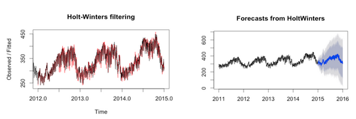
Note: Left chart depicts comparison between model (red) and original data (black). Right chart depicts the 365-day forecast of daily energy demand of Dakar. Original data spanned 4 calendar years from 2011 to end of 2014.
The third cluster’s representative, Springfield, has significant periodicity on a yearly basis (see Figure 17). As is the case for cities in Cluster 3, Springfield has two energy demand peaks, a more pronounced peak in the summer and a less pronounced peak in the winter.
Figure 15: Holt-Winters forecast for Louisville (Cluster 3)
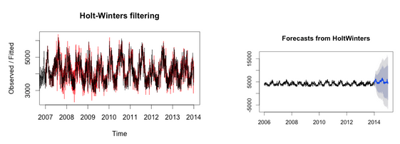
Note: Left chart depicts comparison between model (red) and original data (black). Right chart depicts the 365 day forecast of daily energy demand of Springfield. Original data spanned 3 calendar years from 2011 to end of 2013.
The fourth cluster’s representative, Sacramento, shows a large peak at its summer. Sacramento’s energy demand profile shows a slight downward trend from 2007 to 2013 (see Figure 18). Figure 16: Holt-Winters forecast for Sacramento (Cluster 4)
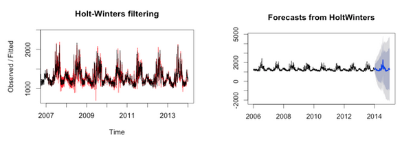
Note: Left chart depicts comparison between model (red) and original data (black). Right chart depicts the 365 day forecast of daily energy demand of Sacramento. Original data spanned 7 calendar years from 2006 to end of 2013.
We also verified that the forecast errors obtained by deducting the fitted data from the original data are normally distributed (see Figure 19).
Figure 17: Forecast errors
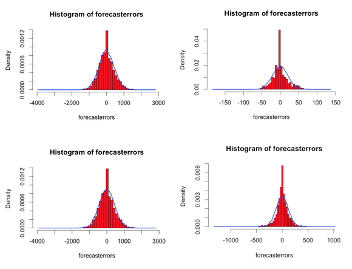
Note: Top left: forecast errors for Abidjan; top right: forecast errors for Dakar; bottom left: forecast errors for Springfield; bottom right: forecast errors for Sacramento
As mentioned, we implemented the visualizations using the cascade, “drill-down” approach. A static image of the visualization is provided in Figure 20. The interactive visualizations are available at http://denistanwh.github.io.
Figure 18: Static screenshot of a single frame of the visualization
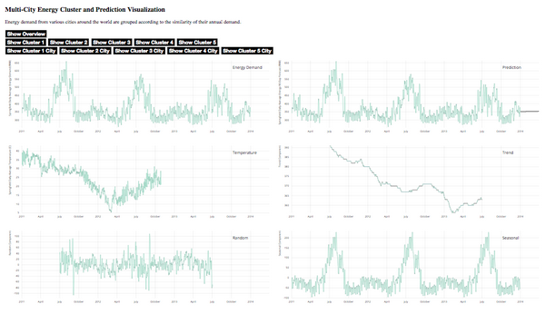
Note: Image zoomed in significantly to avoid truncation
Using energy demand data from 43 cities, we trimmed the data down to 30 cities and stratified them into 4 groups based on similarity in the shape of their energy demand curves. We then applied a Holt-Winters time-series algorithm to forecast the energy demand over a period of 365 days for each chosen city. Finally, we visualized the energy data and forecasts using a cascading “drill-down” approach. This approach allows us to first depict an overview of the data before zooming into the granular details, in line with Schneiderman’s visual information seeking mantra. We believe that this is an appropriate technique to present the energy information to an audience of disparate, middle-class energy consumption decision makers around the world. We hope that the access to this information will incrementally change the decentralized decisions made by all of these decision makers, arresting or slowing the projected explosion in global energy demand.